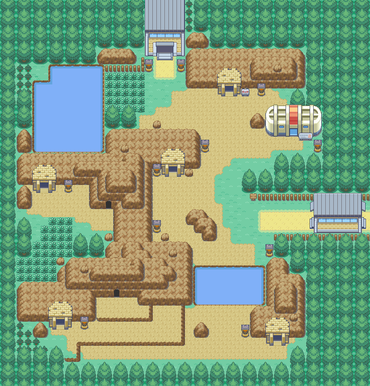
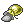

Johto · Höhle, Wald oder Turm
Alph-Ruinen
Johto8 wilde Pokémon2 Trainer22 Items
- Region
- Johto
- Norden
- Route 36
- Osten
- Route 32
- Zugänge
- Einheitstunnel


Wilde Pokémon
Level und Chancen sind die Werte, die das Spiel hier verwendet. Tagsüber heißt 6 bis 19 Uhr, nachts 19 bis 6 Uhr.
Außenbereich
Hohes Gras
Kopfnuss
| Pokémon | Level | Chance |
|---|---|---|
| Lv. 59–64 | 100 % |
U1S
Höhle
| Pokémon | Level | Chance |
|---|---|---|
| Lv. 45 | 100 % |
Besondere Pokémon
Geschenke, feste Begegnungen und Tausche an diesem Ort. Das Level ist das Level im Spiel.
Trainer
2 Trainer kämpfen hier gegen dich. Level und Pokémon sind die, die sie im Kampf wirklich einsetzen.
Außenbereich
Items
Itembälle und versteckte Items an diesem Ort.
 SonderbonbonverstecktAußenbereich
SonderbonbonverstecktAußenbereich NuggetverstecktAußenbereich
NuggetverstecktAußenbereich HelixfossilU1S (kein Itemball)
HelixfossilU1S (kein Itemball) DomfossilU1S (kein Itemball)
DomfossilU1S (kein Itemball) AltbernsteinU1S (kein Itemball)
AltbernsteinU1S (kein Itemball) GS-BallU1S
GS-BallU1S Top-BeleberKammer
Top-BeleberKammer EnergiestaubKammer
EnergiestaubKammer KraftwurzelKammer
KraftwurzelKammer HeilpuderKammer (2-mal)
HeilpuderKammer (2-mal)
ZauberascheKammer SternenstaubKammer
SternenstaubKammer SternenstückKammer
SternenstückKammer WassersteinKammer
WassersteinKammer MondsteinKammer
MondsteinKammer HolzkohleKammer
HolzkohleKammer Leben-OrbKammer
Leben-OrbKammer PirsifbeereKammer
PirsifbeereKammer SinelbeereKammer
SinelbeereKammer PrunusbeereKammer
PrunusbeereKammer TsitrubeereKammer
TsitrubeereKammer